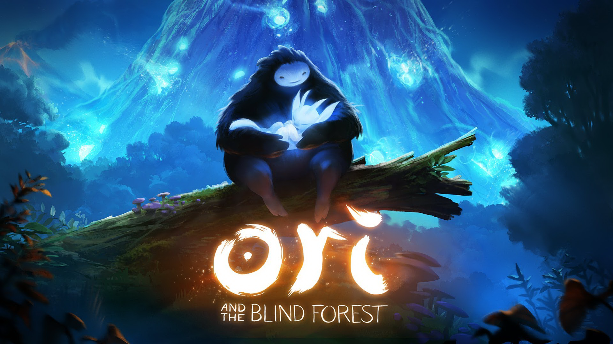
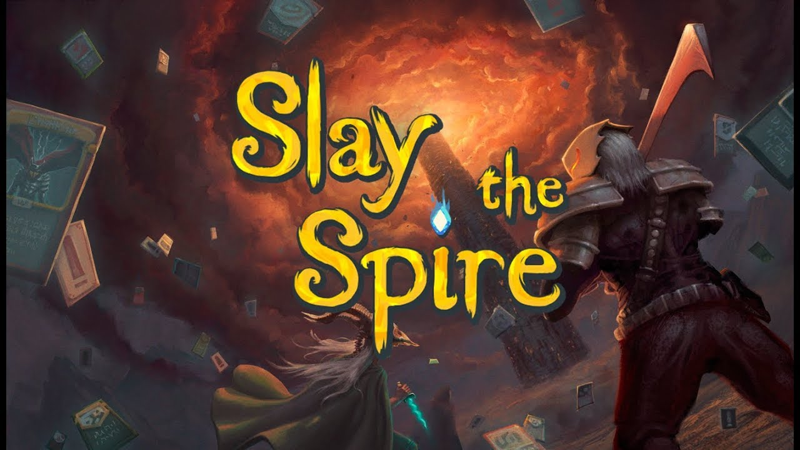

Gry
Wiataj jednym z moich hobby są gry komputerowe chociaz w ostanim czasie mam coraz mniej czasu aby w nie grać dalej bardzo lubię to robic. Pewnie jak będziesz się miał przekonać mój gust do gier jest dosyć nietypowy i zróżnicowany. Co warto nadmienić nie jestem specjalnym miłośnikiem gier multiplayer typu CS-GO (teraz CS2) lub LOL (league of legends). Pniżej podam przykładu kilku z moich ulubionych gier wraz z krótkim opisem kolejnosc jest raczej przypadkowa.
Ori and the Blind Forest
Ori and the Blind Forest jest grą z gatunku
metroidvaniaMetroidvania – podgatunek komputerowych przygodowych gier
akcji. Termin ten jest kombinacją tytułów serii gier Metroid i
Castlevania. Obie produkcje niedługo po swoich premierach
zyskały miano przebojów, bowiem ich oryginalność i niezwykła
grywalność stanowiły inspirację dla wielu późniejszych tytułów.
Gry typu metroidvania używają podobnych lub identycznych
mechanik rozgrywki co te dwie serie. W grach z tego gatunku
postać gracza przemierza spójny świat tworzony przez sieć
dwuwymiarowych map. Mechanika poruszania się jest podobna do
stosowanej w grach platformowych. Użytkownik przedostaje się do
kolejnych części świata, a w międzyczasie pokonuje stojących mu
na drodze przeciwników. W trakcie rozgrywki bohater napotyka
wiele przeszkód, które pokonuje dzięki zdobyciu nowych
umiejętności i ekwipunku. Rozwój postaci jest jednym z
kluczowych aspektów gier tego gatunku..
(platformówka) wyprodukowana prze austryjackie studio gier Moon
Studios gra została wydana przez Microsoft Studios 11 marca 2015
roku na platformy Microsoft Windows oraz Xbox One. W 2016 ukazała
się wersja rozszerzona gry, Ori and the Blind Forest: Definitive
Edition, która została wydana na platformy Windows, Xbox One oraz
Nintendo Switch w którą to wersje właśnie grałem.Rozszerzenie to
wprowadziło pare nowych lokacji oraz kilka nowych umiejętności dla
tytułowego stworka Ori.

Krótki opis:
W grze wcielamy się w postać młodego ducha lasu o imieniu Ori. Naszym celem jest uratowanie umierającego lasu poprzez zebranie trzech kul energii odpowiadające trzem żywiołom (woda, wiatr, ogień). Wraz z przechodzeniem poszczególnych etapów gry, dowiadujemy się wielu szczegółów, które uzupełniają wątek fabularny. Co ciekawe, w grze nie występują żadne dialogi, historię poznajemy za pomocą cut-scenek oraz monologów wypowiadanych przez Drzewo Dusz lub naszego pomocnika Seina (duch leśnego drzewa).Podsumowanie:
Gra dzięki swojej pięknej oprawie graficznej wzruszającej historii oraz pięknego soundtracku jest bardzo przyjemna i relaksując. Warto też wspomnieć że poziom trudności jest dosyć wymagający w tej grze lecz daje dużo satysfakcji. Gra opiera się tutaj głównie na elementach platformowych i zręcznościowych walka jest uproszczona ponieważ nie musimy celować a jedynie znajdować sie w opowiedniej odległości od celu. W grze raczej nie spotkałem się z wieloma bugami. Grę przeszedłem na 100% i serdecznie ją polecam.Slay the Spire
Slay the Spire to niezależna gra wideo typu
roguelikeRoguelike (Rogue-like)- gatunek gier komputerowych których
protoplastą była gra Rogue Cechą charakterystyczną gier
roguelike jest znaczna losowość świata. Wszelkie lochy, potwory,
skarby, miasta, a nawet imiona NPC są najczęściej generowane
losowo w każdej rozgrywce.Rozgrywka toczy się zwykle w trybie
turowym. W większości gier roguelike śmierć postaci gracza
kończy rozgrywkę, bez możliwości powrotu do ostatnio zapisanego
stanu gry. Fani gier roguelike uważają, że opcja zapisu gry
służy tylko do przerwania gry, a wykorzystanie jej w inny sposób
jest postrzegane jako sprzeczne z zasadami gry., oparta na mechanice budowania talii kart, stworzona przez
amerykańskie studio Mega Crit i wydana przez Humble Bundle. Gra
została pierwotnie wydana w wersji "early access" na platformy
Microsoft Windows, macOS i Linux pod koniec 2017 roku, a oficjalna
wersja ukazała się w styczniu 2019 roku. Następnie gra została
wydana na konsolę PlayStation 4 w maju 2019 roku, na konsolę
Nintendo Switch w czerwcu 2019 roku i na konsolę Xbox One w sierpniu
2019 roku.

Krótki opis:
W grze wcielamy się w jednego z cztereh protagonistów (Ironclad,Silent,Defect,Watcher), i wspinamy się po kolejnych piętrach tytułowej iglicy aby dotrzeć na jej szczyt i pokonać finałowego bossa. Na poszczególnych piętrach możemy natrafić na zwykłych przeciwników, elitarnych przeciwników,ognisko , sklep, skrzynie ze skarbami oraz tak zwane pytajniki. Walcząc z przeciwnikami kompletujemy nasz deg potrzebny do finalnej rozgrywki a także zdobywamy reliki i potki. Gra składa się z 3 aktów na końcu każdego znajduje się boss.